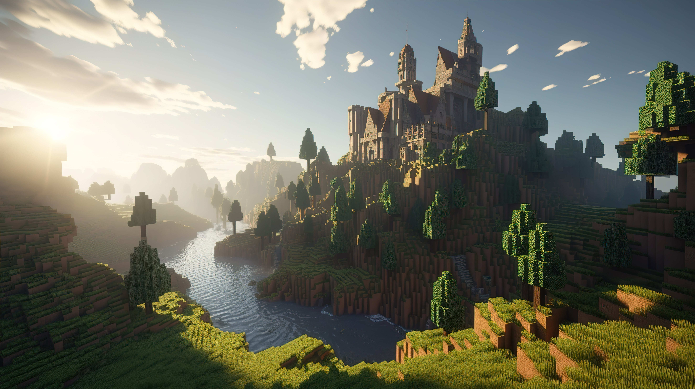
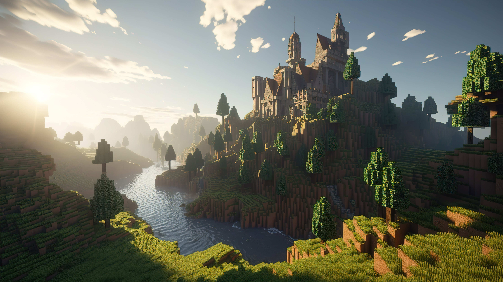

Bem-vindo ao Mundo de Minecraft!
Minecraft é um jogo de construção em blocos que permite explorar mundos infinitos e criar de tudo, desde casas simples até castelos imponentes. Jogue no modo criativo com recursos ilimitados ou mergulhe fundo no modo de sobrevivência, minerando materiais para criar armas e armaduras para se defender das criaturas perigosas.
 

Explore biomas diversos, lute contra mobs, crie equipamentos poderosos e desafie os limites da sua criatividade. O que você vai construir?
Over World
No Over World é onde tudo começa e onde o jogador mais terá liberdade para fazer o que quiser! Em minecraft assim como a maioria dos jogos, o joga começa sem nada, mas com a liberdade tudo pode ser conquistado apenas explorando o mapa.
Em Albion.. Minecraft você pode ser o que quiser, sendo eles: Minerador, Fazendeiro, Aventureiro, Explorador, Alquimista,
Cozinheiro, Caçador e muito mais. Todas essas Profissões te ajudaram a ir em outros mundos para mais diversão.
Nether
No Nether não se deve ir dispreparado, lá possui bastante criaturas hostis que irão te enfrentar além das grandes quantidades de lava. Porém também é fonte de varios recursos extremamentes importantes mas a maioria deles é necessario matar as criaturas, fica ai a lista dos mobs e os drops de cada um.
-
Ghast
- Drop: Lágrimas de Ghast
- Drop: Polvora
- Drop: Orbs de Experiência
-
Wither Skeleton
- Drop: Carvão
- Drop: Osso
- Drop: Espada de Pedra (raramente)
- Drop: Cabeça de Wither Skeleton (raramente )
- Drop: Orbs de Experiência
-
Magma Cube
- Drop: Creme de Magma
- Drop: Orbs de Experiência
-
Piglin
- Drop: Pepita de Ouro
- Drop: Barra de Ouro (raramente)
- Drop: Besta (raramente)
- Drop: Espada (raramente)
- Drop: Orbs de Experiência
-
Piglin Brute
- Drop: Pepita de Ouro
- Drop: Barra de Ouro (raramente)
- Drop: Machado (raramente)
- Drop: Orbs de Experiência
-
Hoglin
- Drop: carne de porco crua
- Drop: Couro
- Drop: Orbs de Experiência
-
Strider
- Drop: Fio
- Drop: Orbs de Experiência
-
Blaze
- Drop: Vara de Blaze
- Drop: Orbs de Experiência
Esse ultimo o Blaze dropa a a Vara de Blaze item que pode ser craftado em Pó de Blaze que usado na Pérola do Fim. Itém extremamente necessário para ir para...
The End
O The End como ja fala "O Fim" é um lugar para que não tem muito o que fazer mas assim que chegar você apenas encontrar Endermans e o o Ender Ender-Dragon
Aqui não tem muito o que fazer se não matar o Ender Dragon, e olha que é dificil não vá para lá sem se preparar ou perderá tudo. Matar o Ender Dragon é considerado por muitos o objetivo do jogo, mas depois que matá lo sera liberado novo mapa a End City onde poderá com sorte encontrar a Élitro as asas que dará a maior sensasão de liberdade que o jogo pode proporcionar

Com Todas essas informações, já deu pra perceber que Minecraft é um daqueles jogos que você joga por horas e ainda não se cansa, e ainda quer jogar mais. Por isso vá lá, compre o jogo e jogue, a diversão será garantida!